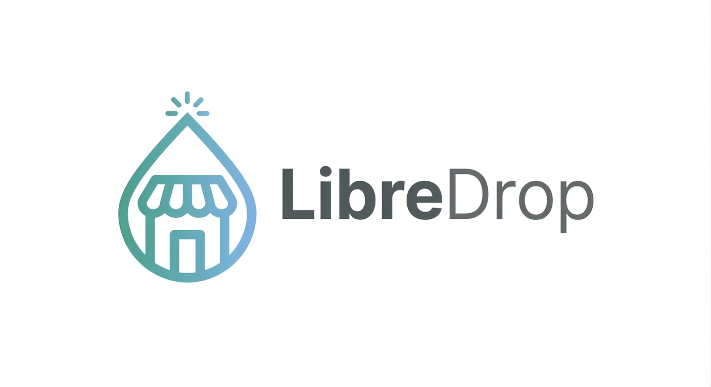
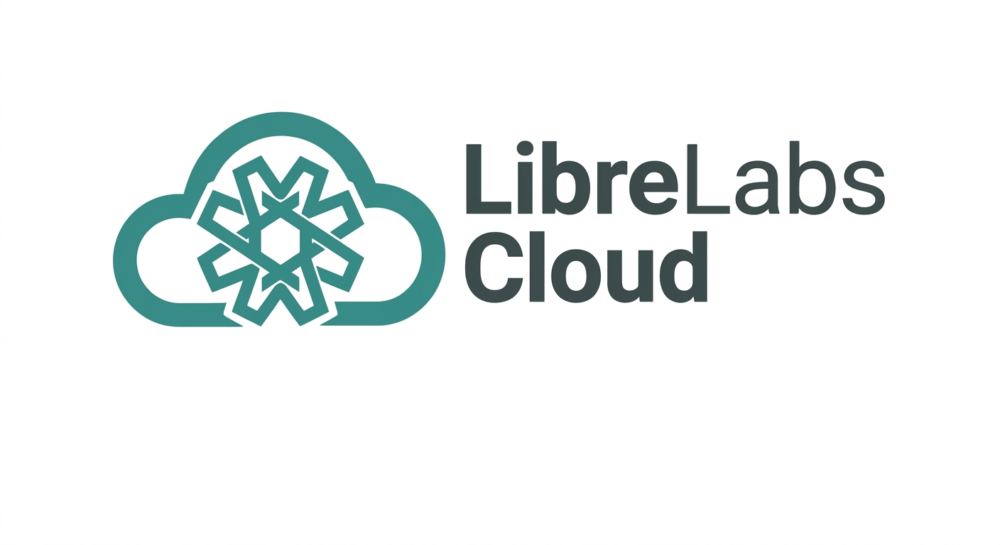

Misión
Crear software útil y accesible que devuelva el control de la tecnología a las personas que la utilizan.
Laboratorio independiente · Open Source · Hecho en Guatemala
LibreLabs es un pequeño laboratorio de software que crea herramientas Open Source y servicios Cloud alrededor de ellas. Sin humo, sin planes complicados: software útil, sencillo y libre.
«Un pequeño laboratorio construyendo software útil y libre.»
Proyecto principal: LibreDrop · tiendas online simples · AGPLv3 · hecho con personas comunes en mente
Qué es LibreLabs
LibreLabs construye herramientas tecnológicas enfocadas en el Open Source, la accesibilidad, la autonomía y los pequeños negocios. Tecnología sencilla, software útil y una comunidad alrededor.
Crear software útil y accesible que devuelva el control de la tecnología a las personas que la utilizan.
Construir un ecosistema de herramientas abiertas que permita a personas, desarrolladores y pequeños negocios usar tecnología sin depender de plataformas cerradas.
Open Source, simplicidad, autonomía y utilidad. Tecnología sencilla que entiende cualquiera, pensada para gente común.
Qué hacemos
En LibreLabs construimos software abierto y, cuando tiene sentido, ofrecemos servicios Cloud administrados alrededor de él. La diferencia es clara.
Proyectos de software que podés estudiar, modificar y utilizar bajo sus respectivas licencias. El código está abierto, la transparencia es parte del producto.
Ver proyectosPara quienes prefieren usar el software sin encargarse de toda la infraestructura, ofrecemos servicios Cloud administrados alrededor de nuestros proyectos.
Conocé LibreLabs CloudProyectos
Hoy el proyecto principal de LibreLabs es LibreDrop. Lento pero constante: seguimos construyendo más herramientas abiertas.
Plataforma Open Source para crear tiendas online simples: publicá tus productos y recibí pedidos por WhatsApp, sin comisiones.
Seguimos trabajando en herramientas útiles para pequeños negocios y para la comunidad. Cuando haya algo nuevo, va a vivir acá, abierto y público.
Hacia dónde va LibreLabsLibreDrop
LibreDrop es el proyecto principal de LibreLabs: una plataforma Open Source (AGPLv3), hecha en Guatemala, con un objetivo claro — que vender online sea simple y sin comisiones.
Estado real del proyecto: el backend de v1 está terminado. Clientes, pedidos y seguimiento de pagos se están desarrollando para futuras versiones; en el MVP el cobro se gestiona por fuera de la plataforma, vía WhatsApp.

LibreDrop Cloud
LibreDrop Cloud es una versión administrada de LibreDrop: el mismo software, ya instalado, con la infraestructura y el mantenimiento a cargo de LibreLabs. Ideal para personas y negocios que quieren vender sin encargarse del servidor.
Los detalles operativos del servicio (límites, almacenamiento, soporte) serán definidos y publicados oficialmente por LibreLabs.

LibreLabs Cloud
LibreLabs construye proyectos Open Source y, cuando tiene sentido, ofrece servicios Cloud administrados alrededor de ellos. LibreDrop Cloud es el primer caso; el modelo puede extenderse a otros proyectos del ecosistema.

Cada proyecto Open Source puede vivirse de dos formas: vos lo administrás, o LibreLabs lo administra por vos en la nube. La idea no reemplaza al software libre: lo complementa.
LibreLabs Cloud es la capa de servicios administrados de LibreLabs, pensada para crecer junto a los proyectos del laboratorio.
Cómo funciona
Así se ve el modelo de LibreLabs Cloud: cuando ofrecemos un servicio administrado alrededor de un proyecto, hay una división clara del trabajo.
Definís tu catálogo, cargás tus productos y les vendés a tus clientes. El software es el mismo proyecto Open Source.
Según el servicio, eso puede incluir:
Open Source y Cloud
A veces parece que el Open Source obliga a administrar un servidor. No es así. El software puede ser libre y, además, estar administrado por alguien más.
Algunas personas quieren administrar su propia instancia: estudiar el código, modificarlo y ejecutarlo donde quieran. Para ellas está el proyecto Open Source y el self-hosting.
Otras personas prefieren usar el mismo software sin tener que administrar servidores. Para ellas está la versión administrada, como LibreDrop Cloud.
La conclusión: Open Source no significa que todos tengan que administrar un servidor. Significa que nadie queda encerrado.
Ver el códigoOpen Source
Creemos en el software libre: que podés estudiarlo, modificarlo, utilizarlo y contribuir. La transparencia no es un extra, es parte de cómo trabajamos.
No todos los proyectos de LibreLabs usan la misma licencia: cada uno define la suya. LibreDrop, por ejemplo, se publica bajo la GNU Affero General Public License v3:
Futuro
El laboratorio recién empieza. No prometemos fechas ni productos mágicos: esta es la dirección general en la que avanzamos.
Publicar más herramientas abiertas, la una a la vez, con calma y atención.
Terminar lo empezado: cerrar el roadmap de LibreDrop y seguir depurando el código.
Software sencillo que resuelva problemas reales de personas que venden y emprenden.
Ofrecer la experiencia administrada, como LibreDrop Cloud, siempre que tenga sentido.
Que haya más gente usando, reportando, enseñando y contribuyendo a lo que construimos.
LibreLabs · Open Source + Cloud
LibreDrop es Open Source y está listo para que lo uses. Si preferís no administrar nada, LibreDrop Cloud te lo deja todo listo por Q100/mes.